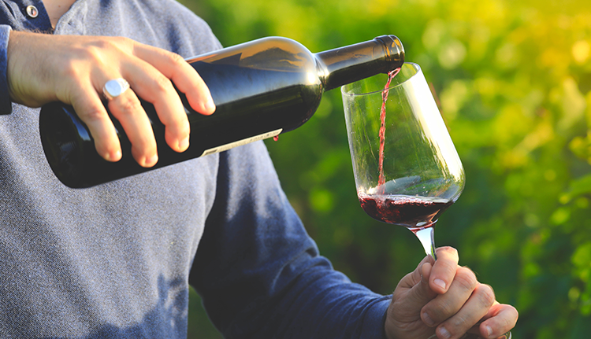

Срок жизни вина – вопрос, который занимает многих. В 1964 году группой винных критиков было открыто на дегустацию немецкое вино 1540 года, которое даже спустя столько времени удивило всех своим неповторимым букетом! Поэтому никогда не знаешь, чего ожидать от бутылочки определенного урожая и года, и тем интереснее каждый раз пробовать что-то новое.
Тем не менее, есть ряд тезисов, которых принято придерживаться. С годами вино не портится, но не все вина могут показывать свои лучшие качества в течение долгого времени – аромат тускнеет, а вкус становится более плоским и менее интересным. Исторически сложилось, что белые вина «устают» быстрее, а красные держатся немного дольше – однако многое зависит от сорта винограда, от года урожая и от мастерства винодела. При этом есть множество нюансов — например, вина выдержанные в дубовых бочках медленнее окисляются, а соответственно дольше живут. Тоже самое можно сказать и о красных винах, которые выдерживались на виноградной кожице.
Тем не менее, есть ряд тезисов, которых принято придерживаться. С годами вино не портится, но не все вина могут показывать свои лучшие качества в течение долгого времени – аромат тускнеет, а вкус становится более плоским и менее интересным. Исторически сложилось, что белые вина «устают» быстрее, а красные держатся немного дольше – однако многое зависит от сорта винограда, от года урожая и от мастерства винодела. При этом есть множество нюансов — например, вина выдержанные в дубовых бочках медленнее окисляются, а соответственно дольше живут. Тоже самое можно сказать и о красных винах, которые выдерживались на виноградной кожице.
